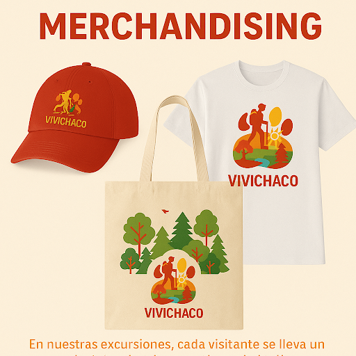
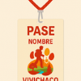

VivíChaco • JustTravel
Experiencias auténticas de turismo aventura y cultura en la provincia del Chaco.
Quiénes somos
VivíChaco nace con la idea de que la gente no solo viaje, sino que viva una experiencia real e inolvidable en la provincia. Nuestro nombre es corto, fácil de recordar y transmite la invitación a vivir el Chaco.
Logo y colores
El logo integra elementos de la naturaleza chaqueña y una paleta que expresa:
La combinación comunica aventura, calidez y compromiso con el medio ambiente.
Misión
Crear experiencias turísticas auténticas, simples, seguras y respetuosas con la naturaleza y las costumbres locales.
Visión
Ser una de las mejores agencias del norte argentino, destacando por mostrar el Chaco real: su naturaleza, cultura y gente.
Objetivos principales
- Hacer que más gente se interese por viajar al Chaco.
- Armar viajes divertidos que cuiden el medio ambiente.
- Trabajar con personas y emprendedores locales para que la comunidad también se beneficie.
Inteligencia emocional
Valoramos la empatía con clientes y guías. Capacitación al equipo para manejar emociones, comunicación positiva y resolución de conflictos para que cada experiencia sea cómoda y enriquecedora.
FODA
Fortalezas
- Enfoque original: mostramos un Chaco real.
- Promoción del ecoturismo y cuidado ambiental.
- Conexión con comunidades y pueblos originarios.
- Nombre y logo modernos y memorables.
Oportunidades
- Crecimiento del turismo en El Impenetrable y zonas naturales.
- Interés por viajes alternativos y naturales.
- Difusión mediante redes sociales y códigos QR.
- Alianzas con emprendedores locales.
Debilidades
- Nueva en el mercado: falta de experiencia real.
- Bajo presupuesto para grandes campañas.
- Difícil competir con agencias ya establecidas.
Amenazas
- Infraestructura turística limitada en ciertas zonas.
- Riesgo de dañar el entorno si no se gestiona bien.
- Competidores que replican ideas si se vuelven virales.
- Clima extremo que puede afectar las salidas.
Elementos promocionales
Nuestra estrategia incluye merchandising y credenciales que cumplen funciones prácticas y promocionales.
Merchandising
Gorras, remeras y bolsas reutilizables diseñadas con la identidad visual de VivíChaco. Funcionan como recuerdo y como publicidad móvil.
Acreditaciones / Pases
Identifican a cada viajero, facilitan el acceso y funcionan como souvenirs que se comparten en redes. Pueden incluir códigos para sorteos o entrega de materiales.
Mantienen la bebida a temperatura y se conservan como recuerdo útil del viaje.

Objeto económico y cotidiano, mantiene la marca presente a diario.
Resistente y cómoda, ideal para excursiones y refuerza la uniformidad visual del grupo.
Circuitos sugeridos (4 días)
Circuito tradicional
- Llegada a Resistencia: city tour, esculturas y Museo del Hombre Chaqueño.
- Parque Nacional Chaco: senderos guiados, centro de interpretación y picnic.
- Parque Nacional El Impenetrable: senderos, río Bermejito y observación de fauna.
- Puerto Barranqueras: paseo en lancha por el Paraná y regreso a aeropuerto.
Circuito creativo
- Circuito de arte urbano por Resistencia y noche cultural en la costanera.
- Colonia aborigen: talleres de artesanías y caminata guiada por los Tobas.
- Kayak en río Negro y humedales con avistaje de aves.
- Visita a producción regional: Caminos del algodón en Sáenz Peña.
Economía local
Chaco combina agricultura (algodón, soja, girasol, maíz), ganadería bovina, actividad forestal y pesca fluvial. También hay actividad minera de materiales para la construcción y la industria textil ligada al algodón.
Análisis Porter
La competencia provincial es moderada: pocas agencias enfocadas en mostrar la cultura y naturaleza del Chaco, lo que nos permite diferenciarnos. Existe amenaza de nuevos competidores online; los clientes comparan precios; los proveedores (transporte y alojamientos) tienen poder de negociación; y hay sustitutos (viajar por cuenta propia o elegir destinos más conocidos).
Infraestructura y conectividad
- Rutas nacionales: 16, 95, 89 y 11 (conexión clave con Corrientes, Formosa y Santa Fe).
- Puerto principal: Barranqueras (salida por Paraná).
- Aeropuerto Internacional de Resistencia (vínculos con Bs.As., Córdoba y Rosario).
- Ferrocarril de cargas: Belgrano Cargas (transporte de granos y madera).
Equipo y contacto
Integrantes: Silva, Criscuolo, Ghigliazza, Romero.
VivíChaco — JustTravel
Correo de contacto : contacto@vivichaco.com
¡Contactános y reservá tu próxima aventura!